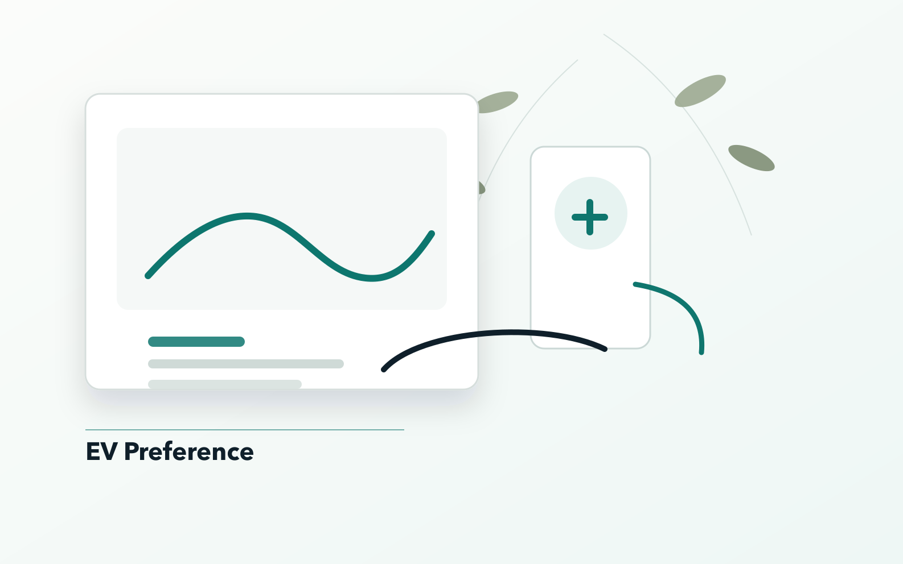
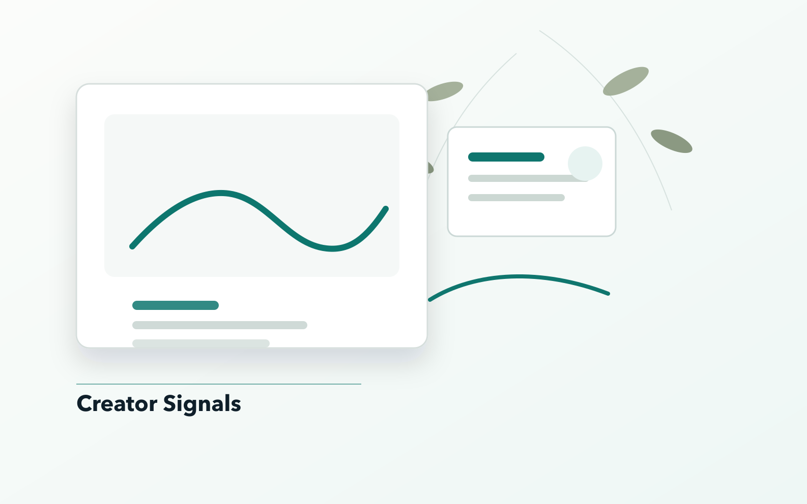
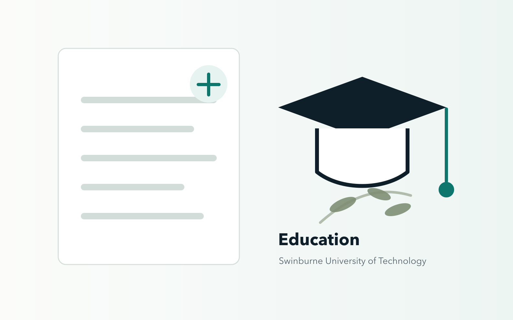

Market research. Consumer evidence. Decision support.
Evidence for clearer decisions.
Survey responses, review data, choice experiments, and clear reporting turned into segmentation, product, policy, and service recommendations for teams that need evidence before decisions.
Market research and consumer insights
11 applied projects, 5 research domains, and selected publication-linked outputs.
Featured work
View all work
Flagship case
Hotel customer segmentation
Question: which guest groups experience hotels differently? Method: aspect-level sentiment and clustering across 74,896 Booking.com reviews. Output: 10 service profiles for targeting, positioning, and priority-setting.
View projectSelected projects
View all work
Choice modeling
EV consumer preference study
Problem: EV teams need to know when design, range, charging, and price change stated choice.
Mobility policy
Motorbike phase-out acceptance
Problem: restriction-first policy loses support when substitutes and transition support arrive too late.
Creator economy
Influencer retention research
Problem: creator strategy needs to separate short engagement from durable return intent.
Health behavior
Student diet quality in Vietnam
Problem: diet-quality interventions need to know which knowledge and activity signals matter first.Skills tied to proof
Methods shown in case pages, not just listed as keywords.
Impact snapshot
A concise view of the portfolio.
Education
Business and marketing training with applied research practice.
Bachelor of Business, Marketing major, Swinburne University of Technology. Project work spans market research, consumer insight, survey analysis, text analytics, and AI-supported exploration.
This portfolio is published under Chung Hy Dai. Some external records may use the reversed order Dai Chung Hy.

Honors and Awards
Recognition and public signals.
HSBC Business Case 2024
Advanced to the Champion Round and presented recommendations under time pressure.
Swinburne academic scholarship
Merit-based award for the Bachelor of Business program.
Aspiring Star research prize
Recognized by Greenovation for research activity and commitment to inquiry.
Contact
Insight for the next decision.
Available for research, analytics, consulting, and project opportunities.